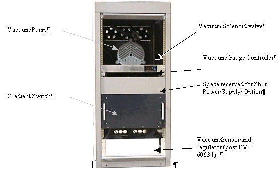
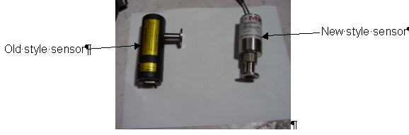
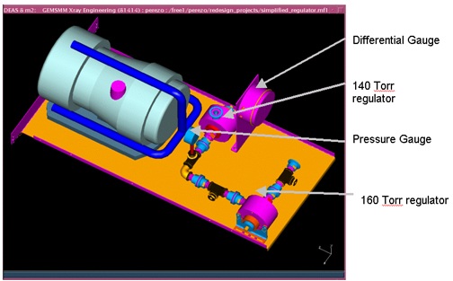
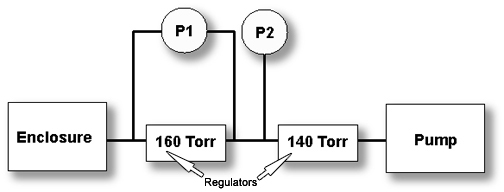

Operating Documentation
Direction 5440001-3, Rev# 6
Signa HDxt Service Methods
Module Version 1.0, Version Date 4/25/07
Operating Documentation |
| NOTE: | The vacuum system was re-designed in November, 2004. See Section 3 for the Theory of the new Vacuum system. |
Illustration 1: Twin Accessory Cabinet (TAC)

| NOTE: | There are two styles of vacuum sensors and gauge controllers. The old-style gauge controller and sensor requires calibration; the new style is pre-calibrated and does not require or allow field adjustments. See Illustration 2, below, for identifying sensor type. |
Illustration 2: Old and New Sensor Types

The vacuum pump is a dry scroll pump. This pump provides the suction to pull down the pressure in the enclosure. A vacuum sensor sends vacuum pressure readings to the vacuum gauge controller in the Twin Accessory Cabinet. This controller interprets the signal and displays the vacuum pressure reading. In addition, the controller has 2 programmable setpoints with low and high values.
Set point 1 High 190 Torr and Low 150 Torr sends a signal to the vacuum regulator box. This intern routes power to the solenoid valve, closing it when it hits 150 Torr and opening it at 190 Torr. Set Point 2 High 200 Torr and Low 130 Torr sends a signal to the vacuum regulator box. This intern routes power to the vacuum pump, turning it off if the pressure hits 130 Torr and back on when it hits 200 Torr. This would only occur if the solenoid valve failed to control the pressure. Finally, the vacuum pressure is sent to the magnet monitor from the vacuum gauge controller.
| ||||
| The vacuum pump should never be operated to a value of less than 100 Torr when power is applied to the RF coil. Serious damage to the RF coil could result. | ||||
Table 1: User Buttons and Descriptions
| Select button | Advances LED bar to appropriate controller function. |
| Gauge Select button | Toggles display between Gauge 1 and Gauge 2 inputs. Note that the system will only use Gauge 1. |
| Raise/Lower buttons | Used to raise or lower setpoint limits, atmosphere setting and zero calibration adjustment. The new style Vacuum Gauge Controller disables this button. Note that we will not use zero calibration adjustment for this system. |
Illustration 3: New Vacuum System

The new vacuum system uses a combination of regulators to control the vacuum level whereas the old system monitored the vacuum level and toggled a solenoid to enable or disable the vacuum.
See Illustration 4 for the schematic of the new vacuum system. As the pump is energized the vacuum level will travel through the two regulators and will begin to pull vacuum on the enclosure. When the vacuum level reaches 160 Torr, the first regulator will close. The pump will continue to pull a vacuum. Eventually the second regulator will close. We will then have a pressure differential between the inputs of the two regulators.
Pressure Gauge P1 measures the differential pressure between input of 160 Torr regulator and 140 Torr regulator. Pressure Gauge P2 measures the absolute pressure at the input to the vacuum pump. Both gauges can be easily viewed by opening the rear door of the cabinet.
When the system is working properly, there will be a pressure differential of between 8 and 16 inches of water on the Differential Gauge. The Pressure Gauge will read between -22 and -25 inches of mercury.
Illustration 4: Vacuum Schematic
